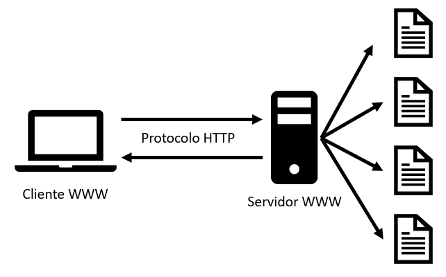

La característica del protocolo HTTP de ser ampliable, ha permitido que durante su desarrollo se hayan implementado más funciones de control y funcionalidad sobre la Web: caché o métodos de identificación o autentificación fueron temas que se abordaron pronto en su historia. Al contrario, la relajación de la restricción de origen solo se ha abordado en los años de la década de 2010.
Se presenta a continuación una lista con los elementos que se pueden controlar con el protocolo HTTP:
- Cache: El cómo se almacenan los documentos en la caché, puede ser especificado por HTTP. El servidor puede indicar a los proxies y clientes, que quiere almacenar y durante cuánto tiempo. Aunque el cliente, también puede indicar a los proxies de caché intermedios que ignoren el documento almacenado.
- Flexibilidad del requisito de origen: Para prevenir invasiones de la privacidad de los usuarios, los navegadores Web, solamente permiten a páginas del mismo origen, compartir la información o datos. Esto es una complicación para el servidor, así que mediante cabeceras HTTP, se puede flexibilizar o relajar esta división entre cliente y servidor
- Autentificación: Hay páginas Web, que pueden estar protegidas, de manera que solo los usuarios autorizados puedan acceder. HTTP provee de servicios básicos de autentificación, por ejemplo mediante el uso de cabeceras como: WWW-Authenticate, o estableciendo una sesión especifica mediante el uso de HTTP cookies.
- Proxies y tunneling: Servidores y/o clientes pueden estar en intranets y esconder así su verdadera dirección IP a otros. Las peticiones HTTP utilizan los proxies para acceder a ellos. Pero no todos los proxies son HTTP proxies. El protocolo SOCKS, por ejemplo, opera a un nivel más bajo. Otros protocolos, como el FTP, pueden ser servidos mediante estos proxies.
- Sesiones: El uso de HTTP cookies permite relacionar peticiones con el estado del servidor. Esto define las sesiones, a pesar de que por definición el protocolo HTTP es un protocolo sin estado. Esto es muy útil no sólo para aplicaciones de comercio electrónico, sino también para cualquier sitio que permita configuración al usuario.
|